Panoramica del progetto
Questo repository documenta la progettazione e realizzazione di un laboratorio di rete completo, costruito interamente in ambiente virtualizzato (GNS3 + VMware Workstation Pro), che replica l'infrastruttura tipica di una piccola/media impresa con più sedi fisiche.
L'obiettivo è dimostrare, in modo pratico e interamente documentato, come progettare e implementare da zero una rete aziendale segmentata per VLAN, protetta da una coppia di firewall FortiGate in cluster ad alta affidabilità (Active-Passive), instradata attraverso uno strato gerarchico di switch Cisco (Distribution/Access) con protocolli VTP, STP e Port Channel, e completata da un dominio Active Directory su Windows Server con relativi client Windows 11 uniti al dominio.
Il progetto nasce con finalità didattiche e dimostrative: ogni fase — dalla progettazione teorica alla configurazione pratica — è tracciata passo dopo passo, inclusi i problemi realmente incontrati e le relative soluzioni, per renderlo replicabile anche da chi si avvicina per la prima volta a questo tipo di laboratorio.
Obiettivi
Clicca su ogni voce per espandere dettagli, screenshot e traccia delle configurazioni.
0. Progettazione della rete
0.1 — Definizione della topologia logica (Core/Distribution/Access, HA firewall)

Topologia definitiva validata: cluster HA FortiGate con link heartbeat dedicato, maglia Distribution/Access ridondata (VTP Server/Client) con collegamenti pronti per Port Channel, Server_Net per il Domain Controller.
Traccia / note
Fase di solo disegno logico — nessun comando CLI eseguito. Validata la coerenza con gli standard reali (HA heartbeat su interfaccia dedicata, maglia Core/Distribution-Access, VTP Server ridondato).
0.2 — Piano di indirizzamento IP con metodologia VLSM
Blocco base: 192.168.0.0/24 + link HA dedicato
fuori blocco.
| Segmento | VLAN | Subnet | Maschera | Gateway | Range host | Broadcast | Indirizzi assegnabili |
|---|---|---|---|---|---|---|---|
| GUEST_NET | 10 | 192.168.0.0/26 | 255.255.255.192 | 192.168.0.1 | .2 – .62 | 192.168.0.63 | 62 |
| ADMIN_NET | 20 | 192.168.0.64/27 | 255.255.255.224 | 192.168.0.65 | .66 – .94 | 192.168.0.95 | 30 |
| MANAGEMENT_NET | 30 | 192.168.0.96/28 | 255.255.255.240 | 192.168.0.97 | .98 – .110 | 192.168.0.111 | 14 |
| SERVER_NET (WIN-SRV-DC01) | — | 192.168.0.112/29 | 255.255.255.248 | 192.168.0.113 | .114 – .118 | 192.168.0.119 | 6 |
| HA-SYNC (FW-1↔FW-2) | — | 192.168.99.0/30 | 255.255.255.252 | — (P2P) | .1 – .2 | 192.168.99.3 | 2 |
| FW-1 ↔ R1 (transito) | — | 192.168.99.4/30 | 255.255.255.252 | — (P2P) | .5 – .6 | 192.168.99.7 | 2 |
| FW-2 ↔ R2 (transito) | — | 192.168.99.8/30 | 255.255.255.252 | — (P2P) | .9 – .10 | 192.168.99.11 | 2 |
| R1 ↔ R2 (HSRP + backup Internet) | — | 192.168.99.12/30 | 255.255.255.252 | — (P2P) | .13 – .14 | 192.168.99.15 | 2 |
Spazio libero per crescita futura: 192.168.0.120 – 192.168.0.255
Traccia / note
Il calcolo VLSM è stato condotto partendo dal segmento con più host previsti fino al più piccolo (GUEST_NET → ADMIN_NET → MANAGEMENT_NET → SERVER_NET), assegnando a ciascuno la subnet più piccola possibile in grado di contenere gli host richiesti più il gateway, con la formula 2^n ≥ host_richiesti + 2 (indirizzo di rete e broadcast non assegnabili). Procedere dal segmento più grande al più piccolo è il metodo standard per evitare frammentazione: se si assegnassero le subnet in ordine casuale, i "buchi" residui tra un blocco e l'altro potrebbero non essere abbastanza grandi da ospitare un segmento successivo più esigente.
Il link di sincronizzazione HA tra i due FortiGate (192.168.99.0/30) è stato deliberatamente collocato fuori dal blocco principale 192.168.0.0/24: è un collegamento punto-punto tra soli due dispositivi, non un segmento utente, e tenerlo separato evita di "sprecare" indirizzi preziosi del blocco principale su un link che non ospiterà mai host reali.
Aggiornamento v1.1: con l'introduzione dei router R1/R2 (vedi punto 2.0), sono state aggiunte 3 nuove subnet /30 dallo stesso blocco 192.168.99.0/24 dedicato ai collegamenti di transito: FW-1↔R1, FW-2↔R2, e il link diretto R1↔R2 usato sia per HSRP sia come route di backup verso Internet.
0.3 — Asset inventory completo
| # | Nodo | Ruolo | Piattaforma | Versione | Identificativo | Risorse |
|---|---|---|---|---|---|---|
| 1 | FW-1 | Firewall primario HA | FortiGate-VM64-KVM | v7.6.7 build3704 | SN: FGVMEVGT9RJSLZ87 | 1vCPU/2GB |
| 2 | FW-2 | Firewall secondario HA | FortiGate-VM64-KVM | v7.6.7 build3704 | SN: FGVMEV_4Z9IEEQ52 | 1vCPU/2GB |
| 3 | ISP | Switch upstream | GNS3 nativo | — | — | trascurabile |
| 4 | SW-1-VTP-SERVER | Core/Distribution | Cisco IOU L2 | IOS 15.1(20130726) | ipbasek9-15.1g.bin | 512MB |
| 5 | SW-2-VTP-SERVER | Core/Distribution | Cisco IOU L2 | IOS 15.1(20130726) | ipbasek9-15.1g.bin | 512MB |
| 6 | SW-1-CLIENT | Access | Cisco IOU L2 | IOS 15.1(20130726) | Board ID: 2048003 | 512MB |
| 7 | SW-2-CLIENT | Access | Cisco IOU L2 | IOS 15.1(20130726) | ipbasek9-15.1g.bin | 512MB |
| 8 | R1 | Router inter-VLAN (primario), HSRP | Cisco 3725 (Dynamips) | IOS 12.4(15)T7 Adv. Enterprise | Board ID: FTX0945W0MY | 128MB / idle-PC 0x60... |
| 9 | R2 | Router inter-VLAN (secondario), HSRP | Cisco 3725 (Dynamips) | IOS 12.4(15)T7 Adv. Enterprise | Board ID: FTX0945W0MY | 128MB / idle-PC 0x60... |
| 10 | WIN-SRV-DC01 | Domain Controller | Windows Server 2022 | Standard Eval, build 20348.587 | Key: W8JDY | 4GB/2vCPU |
| 11 | PC1 | Endpoint provvisorio | VPCS | — | → futuro WIN11-CLIENT-01 | trascurabile |
| 12 | PC2 | Endpoint provvisorio | VPCS | — | → futuro WIN11-CLIENT-02 | trascurabile |
| 13 | PC3 | Endpoint provvisorio | VPCS | — | → futuro WIN11-CLIENT-03 | trascurabile |
Traccia / note
Tenere un inventario aggiornato serve a diversi scopi pratici verificati durante questo stesso progetto: ha permesso di individuare che i due FortiGate hanno un limite di licenza esplicito (1 vCPU / 2GB RAM ciascuno, e come poi emerso anche un massimo di 3 interfacce totali), informazione che ha guidato il calcolo del budget di risorse della GNS3 VM; ha permesso di tracciare i giorni di valutazione residui e il numero di rearm disponibili sulla licenza Windows Server, evitando sorprese future; e fornisce un riferimento univoco (versioni, build, seriali) utile in fase di troubleshooting, per verificare rapidamente se un problema è già noto per quella specifica versione software.
1. Configurazione switch
1.1 — Hardening: AAA, SSH, gestione porte non utilizzate
Traccia / note
Procedura di hardening, lavoreremo un sotto step alla volta:
- Password di enable, accesso privilegiato
- AAA locale + utente amministrativo
- Dominio DNS + generazione chiavi RSA per SSH
- Abilitazione SSH e disabilitazione Telnet
- Hardening linee console e ausiliarie
- Banner di accesso
- Protezione brute force
- Disabilitazione servizi non essenziali
- Limitazione durata sessione e tentativi di login SSH
- Spegnimento porte non utilizzate, configurazione port security (da definire al punto 1.2)
- Creazione VLAN parcheggio e assegnazione porte non utilizzate (da definire al punto 1.2)
1.1.1 - Accesso privilegiato

Imposta la password per accedere alla modalità enable (privilegio massimo). Su questa immagine IOU 15.1 IPBASEK9 il comando genera un hash Type 4, non Type 5/8/9 come preferito — limite noto della piattaforma.
Comandi di diagnostica
-
show running-config | include enable secret— verifica hash cifrato, testo non in chiaro.
1.1.2 - AAA locale

-
aaa new-model— attiva il framework AAA (Authentication, Authorization, Accounting), sostituendo il modello legacy. -
username admin privilege 15 secret StrongPassword123— crea un utente locale con massimo privilegio. -
aaa authentication login default local— impone che il login su console/VTY usi il database utenti locale. -
aaa authorization exec default local— applica gli stessi permessi locali in modalità EXEC.
Comandi di diagnostica
-
show running-config | include aaa|username— conferma la presenza di AAA, utente, e hash cifrato.
1.1.3 - Prerequisiti SSH: dominio e chiavi RSA

-
ip domain-name leonardo.local— imposta il dominio DNS per la generazione delle chiavi RSA. -
crypto key generate rsa— genera le chiavi RSA per SSH. Alla richiesta dei bit rispondere 2048.
Comandi di diagnostica
-
show crypto key mypubkey rsa— visualizza le chiavi RSA generate, confermando la corretta generazione.
1.1.4 - Attivazione SSH v2, disabilitazione Telnet

-
ip ssh version 2— imposta il versionamento SSH 2, più sicuro. -
line vty 0 4— entra nella configurazione delle linee VTY (accesso remoto). -
transport input ssh— abilita solo SSH, disabilitando Telnet. -
login authentication default— applica l'autenticazione AAA anche alle sessioni remote. -
exec-timeout 5 0— imposta timeout di inattività a 5 minuti.
Comandi di diagnostica
-
show running-config | section line vty— conferma la configurazione delle linee VTY e il timeout impostato. -
show ip ssh— verifica la configurazione SSH, mostrando la versione e lo stato del servizio.
1.1.5 - Hardening linee console e ausiliaria

-
exec-timeout 5 0— allinea il timeout già impostato su VTY. -
no privilege level 15— rimuove l'accesso privilegiato automatico da console e aux. -
no exec— impostato su aux, disabilita completamente la porta ausiliaria.
Comandi di diagnostica
-
show running-config | section line con— conferma la configurazione della linea console. -
show running-config | section line aux— conferma la configurazione della linea ausiliaria.
1.1.6 - Banner di accesso

-
banner motd #...#— imposta un messaggio di accesso per avvisare chi si connette che l'accesso è riservato.
Comandi di diagnostica
-
show running-config | include banner— conferma la presenza del banner di accesso.
1.1.7 - Protezione brute-force

-
login block-for 120 attempts 3 within 60— blocca tutti i tentativi di login per 120 secondi se ne rileva 3 falliti in 60 secondi. -
login delay 2— imposta un ritardo di 2 secondi tra ogni tentativo di login. -
login on-failure log— registra i tentativi falliti nel log di sistema. -
login on-success log— registra i tentativi riusciti nel log di sistema.
Comandi di diagnostica
-
show login— visualizza lo stato della protezione brute-force e i tentativi di login recenti.
1.1.8 - Disabilitazione servizi non essenziali

-
no ip http server— disattiva il server di gestione web HTTP. -
no ip domain-lookup— evita che IOS tenti una risoluzione DNS per ogni comando non riconosciuto. -
no service pad— disabilita il protocollo PAD (Packet Assembler/Disassembler). -
no ip finger— disattiva il servizio che permetteva di interrogare da remoto le sessioni attive. -
no ip bootp server— disabilita il servizio BOOTP (predecessore di DHCP), non necessario dato che sarà il Fortigate a gestire il DHCP. -
no service tcp/udp-small-servers— disattiva i servizi diagnostici legacy (echo, chargen, discard, daytime). -
no ip source-route— impedisce l'elaborazione di pacchetti con percorso di rete specificato dal mittente, tecnica usata per aggirare la sicurezza.
Comandi di diagnostica
-
show running-config | include http|domain-lookup|pad|finger|bootp|source-route— conferma la disabilitazione dei servizi non essenziali. -
show ip http server status— conferma che il server HTTP è disabilitato.
1.1.9 - Limitazione durata sessione e tentativi di login SSH

-
ip ssh time-out 60— limita a 60 secondi il tempo massimo per completare la fase di negoziazione/autenticazione SSH. -
ip ssh authentication-retries 3— limita a 3 i tentativi di login consentiti dentro la stessa sessione SSH già aperta.
Comandi di diagnostica
-
show ip ssh— conferma la configurazione SSH, mostrando la versione e lo stato del servizio.
Problemi Riscontrati - 1.1 Hardening Switch
Durante l'hardening sono emersi quattro limiti legati specificamente all'immagine IOU 15.1 IPBASEK9 in uso (una build sperimentale del 2013), utili da documentare per chi replica il progetto con la stessa immagine.
Hashing password bloccato su Type 4: i tentativi di forzare esplicitamente Type 5 o Type 9 tramite algorithm-type sono sempre falliti con "Invalid input detected" — questa immagine non supporta affatto quella sintassi. Di conseguenza, il comando standard enable secret genera automaticamente un hash Type 4, algoritmo che Cisco ha ufficialmente riconosciuto come difettoso (advisory CISCO-SA-20130318-TYPE4: manca il salt e l'iterazione multipla, risultando persino più debole del più datato Type 5). Le versioni corrette (Type 8/9) sono disponibili solo da IOS 15.3(3)M in poi, quindi non raggiungibili su questa piattaforma. Accettato come limite noto e non risolvibile lato software.
Nessun supporto HTTPS: il comando no ip http secure-server non è mai stato riconosciuto. La verifica (show ip http server status) ha confermato "HTTP secure server capability: Not present" — il sottosistema HTTPS non è proprio compilato in questa immagine, quindi il comando è risultato superfluo più che fallito.
Comandi tcp/udp-small-servers non tracciati: pur essendo accettati senza errori dalla piattaforma, non compaiono in nessuna verifica del running-config (nemmeno con all), a differenza di tutti gli altri "no service" di default. Comportamento coerente con altre stranezze già osservate su questa build sperimentale — configurazione comunque applicata, solo non riflessa nell'output di verifica.
Nota aggiuntiva (non un problema): show clock detail mostra un orario già corretto ("Time source is hardware calendar") pur senza NTP configurato — comportamento normale dell'emulazione IOU, che eredita l'orario della GNS3 VM all'avvio del processo. Non è però una sincronizzazione continuativa reale, motivo per cui NTP con autenticazione resta comunque pianificato più avanti per garantire timestamp affidabili nei log di audit. Non presente RTC (Real Time Clock) essendo un emulatore.
1.2 — Configurazione VTP (dominio "LEONARDO") + Port Channel (Ethernet Channel)
Traccia / note
Procediamo con la configurazione del VTP (VLAN Trunking Protocol) per il dominio "LEONARDO". Questo protocollo permette la gestione centralizzata delle VLAN su più switch, evitando la necessità di configurare manualmente le VLAN su ciascun dispositivo. La configurazione prevede la definizione del dominio VTP, la scelta della modalità (server/client), e l'assegnazione delle VLAN necessarie per il progetto.
Procedura configurazione VTP, lavoreremo un sotto step alla volta:
- Verifica preliminare stato VTP
- Configurazione dominio VTP e versionamento
- Password VTP
- Impostazione modalità VTP
- Creazione Port-Channel (LACP)
- Configurazione trunk 802.1Q sulle interfacce Port-Channel
- Configurazione interfacce in trunk verso i firewall FortiGate
- Configurazione interfacce in access verso gli endpoint
- Designazione Primary Server
- Verifica propagazione del dominio VTP
- Creazione VLAN solo dal Primary SW-Server-VTP
- Creazione VLAN parcheggio + assegnazione porte non utilizzate + shutdown porte non utilizzate
- Port Security sulle porte in access
1.2.1 - Verifica preliminare stato VTP

-
show vtp status— verifica lo stato del VTP, mostrando il dominio attuale, la modalità (server/client), la versione e altre informazioni utili. -
show vlan brief— visualizza le VLAN attualmente configurate sullo switch.
Comandi di diagnostica
Il comando è di per sé diagnostico, non modifica la configurazione. Serve a confermare lo stato del VTP prima di procedere con le modifiche.
1.2.2 - Impostazione dominio VTP versione 3

-
vtp domain TuoDominio— imposta il dominio VTP su "TuoDominio". -
vtp version 3— introduce il meccanismo Primary Server.
Comandi di diagnostica
-
show vtp status— conferma la modifica del dominio e della versione.
1.2.3 - Password VTP

-
vtp password StrongPassword123 hidden— imposta una password per l'autenticazione VTP, proteggendo la propagazione delle VLAN tra switch. La parola chiave "hidden" cifra la password.
Comandi di diagnostica
-
show vtp password— conferma la presenza della password VTP.
1.2.4 - Impostazione modalità VTP

-
vtp mode server— imposta lo switch come server VTP, che può creare, modificare e cancellare VLAN. -
vtp mode client— imposta lo switch come client VTP, che riceve le informazioni sulle VLAN dal server.
Comandi di diagnostica
-
show vtp status— verifica la modalità VTP assegnata agli switch.
1.2.5 - Creazione dei Port-Channel (LACP)

-
channel-group 1/2/3 mode active— assegna ciascuna interfaccia fisica al relativo gruppo EtherChannel, utilizzando il protocollo LACP in modalità active. Questa modalità avvia attivamente la negoziazione LACP con l'altro capo del collegamento: se i due lati non sono compatibili, il protocollo rifiuta di formare il bundle, prevenendo loop di rete o traffico incoerente.
Comandi di diagnostica
-
show etherchannel summary— mostra l'insieme di tutti i pool logici creati, le interfacce fisiche coinvolte e il loro stato di attività. -
show interfaces port-channel n— mostra nel dettaglio ogni singola interfaccia logica, elencando stato di attività, banda aggregata e indirizzo fisico. -
show lacp neighbor— conferma la negoziazione LACP attiva con l'altro capo del collegamento. -
show lacp counters— mostra i pacchetti LACPDU inviati e ricevuti per interfaccia, utile per diagnosticare collegamenti ancora in stato "suspended".
1.2.6 - Configurazione trunk 802.1Q sulle interfacce membro

-
switchport trunk encapsulation dot1q— specifica 802.1Q come metodo di incapsulamento. -
switchport trunk allowed vlan 10,20,30,40— limita il trunk alle sole VLAN specificate. -
switchport mode trunk— imposta la modalità trunk (permette il passaggio delle informazioni di più VLAN in un unico link).
Questa configurazione è stata ripetuta su ogni switch: su questa immagine IOU le impostazioni switchport applicate ai Port-Channel non si propagavano correttamente ai membri fisici coinvolti, quindi è risultata affidabile solo la configurazione su ogni singola porta.
Comandi di diagnostica
-
show interfaces trunk— conferma la colonna VLAN allowed on trunk. -
show etherchannel summary— mostra che tutti i gruppi logici con link aggregati abbiano il flag (P) bundled in port-channel.
1.2.7 - Trunk verso i FortiGate

Questi comandi sono identici allo step precedente.
Comandi di diagnostica
-
show interfaces Ethernet 0/1 switchport— mostra nello specifico la configurazione di una singola interfaccia.
1.2.8 - Porte access verso gli endpoint

-
switchport mode access— definisce per l'interfaccia la modalità access, ottima misura di hardening anti-VLAN-hopping (tecnica di attacco che permette a un dispositivo collegato a una singola VLAN di superare la segmentazione e raggiungere il traffico di altre VLAN). -
switchport access vlan n— assegna la porta alla VLAN specifica.
Comandi di diagnostica
-
show interfaces status— mostra il riepilogo delle interfacce e la loro assegnazione.
1.2.9 - Designazione Primary Server

-
vtp primary vlan— promuove lo switch nel quale è stato eseguito il comando a Primary Server riconosciuto dal database VLAN del dominio VTP. Da questo momento lo switch potrà apportare modifiche alle VLAN.
Comandi di diagnostica
show vtp status — mostra lo stato della
configurazione del VTP, da eseguire su tutti gli switch
appartenenti al dominio VTP. Prestare particolare attenzione
alla voce Primary Description, e verificare che sia
effettivamente stato riconosciuto come Primary Server lo
switch selezionato.
1.2.10 - Verifica propagazione dominio VTP

Per questo punto non è necessario eseguire comandi specifici di configurazione, andremo a verificare la funzionalità con dei comandi di diagnostica.
Comandi di diagnostica
-
show vtp status— da eseguire su tutti gli switch appartenenti al dominio VTP, prestando particolare attenzione a VTP Version Running, VTP Domain Name, Configuration Revision, MD5 digest: le voci restituite devono essere identiche per ogni switch. -
show vtp counters— mostra che i pacchetti VTP stanno realmente circolando sui trunk configurati.
Prestiamo particolare attenzione a Configuration Revision: si tratta di un contatore che si incrementa di 1 ogni volta che viene apportata una modifica al database VLAN da parte del Primary Server.
Per quanto riguarda MD5 digest, si tratta di un hash calcolato sull'intero contenuto del database VLAN — è come un'impronta digitale che varia a ogni minima differenza di contenuto, ed è il controllo più affidabile: se combacia su tutti gli switch, si ha la certezza che il database VLAN sia identico byte per byte ovunque, accertando che ogni switch del dominio VTP sia l'esatta copia dell'altro.
1.2.11 - Creazione delle VLAN (dal Primary Server)

-
vlan id— crea la VLAN con uno specifico numero ID. -
name nome— assegna un nome descrittivo alla VLAN: è un dato puramente informativo, ma resta fondamentale la coerenza nella nomenclatura — a mio avviso è essenziale essere il più esplicativi possibile.
Comandi di diagnostica
-
show vlan brief— da eseguire su ogni switch appartenente al dominio VTP, mostra il riepilogo delle VLAN create localmente nel dispositivo; accertarsi che queste vengano replicate sugli switch restanti.
1.2.12 - Creazione VLAN parcheggio + assegnazione porte non utilizzate


Per la creazione della VLAN parcheggio la procedura
corrisponde a quanto visto nella creazione delle VLAN
10,20,30,40. Questa viene sempre creata dallo switch Primary
Server, ed è necessario ripetere il comando
vtp primary vlan in quanto, essendo un comando
operativo, il dispositivo perde il privilegio di Primary
Server al suo riavvio.
-
interface range ...— applica lo stesso blocco di comandi a tutte le interfacce selezionate, ottimo metodo per evitare di configurare le interfacce una alla volta. -
switchport mode access— comando necessario per assegnare una VLAN access. -
switchport access vlan 999— assegna la porta fisica alla VLAN parcheggio, che resta isolata dal resto della rete. -
shutdown— spegne completamente la porta, essendo non utilizzata.
Comandi di diagnostica
-
show vlan brief— da eseguire su ogni switch appartenente al dominio VTP, mostra il riepilogo delle VLAN create localmente nel dispositivo e accertarsi che queste vengano replicate sugli switch restanti. -
show interfaces status— mostra lo stato delle porte.
1.2.13 - Port Security sulle porte access

La funzionalità Port Security è una misura di sicurezza applicata a livello 2 (Data Link): permette di controllare e limitare l'accesso fisico a una specifica porta dello switch. Senza Port Security, qualsiasi dispositivo collegato fisicamente a una porta in access può ottenere accesso alla rete.
-
switchport port-security— attiva la funzionalità sulla porta; prima di attivare questo comando la porta deve già essere impostata in access. -
switchport port-security maximum 1— limita l'accesso fisico alla porta a un solo indirizzo MAC. -
switchport port-security violation restrict— in caso di violazione, "restrict" scarta il traffico dell'indirizzo non autorizzato e genera un log; è possibile anche impostare, in caso di violazione, lo spegnimento totale della porta (shutdown).
Al momento ho deciso di non specificare gli indirizzi MAC che possono avere accesso al dispositivo, in quanto in questa fase del progetto la topologia di rete comprende i VPCS, utilizzati per testare la connettività — non appena verranno importate le virtual machine Windows, applicheremo un ulteriore livello di restrizione sul Port Security.
Comandi di diagnostica
-
show port-security— mostra l'insieme di tutte le porte protette nello switch. -
show port-security interface ethernet n— mostra il dettaglio per ogni singola porta.
Prestiamo attenzione a quest'ultimo comando, in quanto restituisce un output molto interessante.

Questo output è molto interessante in quanto mostra nello specifico lo stato di attività del Port Security e se ci sono state violazioni — lo capiamo dalla voce "Port Status: Secure-up", con nessuna violazione registrata al momento. Viene indicata anche la modalità di restrizione, in questo caso "Restrict". Molto interessante anche la voce "Aging Time: 0 mins": si tratta di un timer di apprendimento degli indirizzi MAC, per cui è possibile impostare un timeout automatico che resetta l'indirizzo appreso. Viene mostrato anche il limite degli indirizzi MAC che possono essere appresi dalla porta, anche se sono stati definiti staticamente degli indirizzi MAC. Le ultime due voci — "Last Source Address" (il MAC appreso che identifica un host e la VLAN di provenienza) e "Security Violation Count" (che tiene traccia delle violazioni) — completano il quadro.
Problemi Riscontrati - 1.2 — Configurazione VTP (dominio "LEONARDO") + Port Channel
Durante la configurazione del protocollo VTP, quando abbiamo
impostato una password per il dominio VTP, questa veniva
mostrata in chiaro — inizialmente ho pensato fosse un problema
legato alla versione del VTP, ma anche impostando la versione
3 la password rimaneva comunque in chiaro senza hash. Il
problema è stato risolto con il comando completo
vtp password StrongPassword123 hidden: la parola
chiave "hidden" è proprio quella che memorizza la password
cifrata.
Durante la configurazione del Port-Channel, alcune interfacce risultavano sospese; il problema si è risolto una volta completata su tutti gli switch la configurazione del Port-Channel — è un comportamento normale del protocollo LACP.
Valori di banda (BW) inconsistenti e casuali sui Port-Channel:
ogni Port-Channel su ogni switch mostrava valori di banda
diversi e imprevedibili (10.000, 20.000 o 100.000 Kbit/sec,
invece del corretto 20.000), accompagnati da errori di log
%IDBMAN-3-INVALIDAGGPORTBANDWIDTH e %IDBMAN-3-AGGPORTMISMATCH
— difetto di sincronizzazione interna della piattaforma tra la
struttura dati del Port-Channel e quella delle interfacce
fisiche. Corretto forzando manualmente
bandwidth 20000 su ogni Port-Channel di ogni
switch, per garantire un valore coerente ai fini del calcolo
del costo STP. Questo passaggio va eseguito entrando
nell'interfaccia aggregata con
interface port-channel n, e va ripetuto su tutti
i link aggregati.
1.3 — Configurazione STP
Traccia / note
Procediamo con la configurazione del protocollo STP (Spanning Tree Protocol): un protocollo di livello 2 (Data Link) che ha lo scopo di prevenire i loop in una rete dove esistono percorsi ridondanti tra switch. Funziona costruendo automaticamente una topologia logica ad albero (da cui il nome "spanning tree") a partire dalla topologia fisica reale: elegge uno switch come Root Bridge (radice dell'albero), calcola il percorso più breve da ogni altro switch verso il Root Bridge e blocca selettivamente le porte con un percorso alternativo (ridondante).
Nel nostro caso risulta molto utile definire la sua configurazione: senza questo protocollo, un frame in broadcast (ad esempio una richiesta ARP) inviato da un host circolerebbe all'infinito tra i vari percorsi paralleli, e ogni switch lo riceverebbe generando un ciclo continuo — fenomeno noto come "broadcast storm". Questo protocollo si attiva di default, e al momento i link ridondanti sono già bloccati (la rete funziona) — la configurazione che vedremo in questo punto non serve quindi a far funzionare STP, ma a controllarlo deliberatamente. Andremo a definire quale switch sarà eletto Root Bridge primario e secondario, definendo un subentro deterministico e prevedibile, e definiremo anche la sicurezza con la funzionalità BPDU Guard, impedendo che un dispositivo non autorizzato collegato a una porta access possa interferire con l'elezione del Root Bridge fingendosi uno switch legittimo.
Procedura configurazione STP, lavoreremo un sotto step alla volta:
- Verifica preliminare stato STP attuale (root bridge di default, porte in blocking)
- Scelta del protocollo STP (PVST+ già attivo di default, valuteremo se passare a Rapid-PVST+ per convergenza più veloce)
- Impostazione esplicita del Root Bridge primario e secondario
- Protezioni STP aggiuntive (BPDU Guard sulle porte in access)
- Test di convergenza: failover del Root Bridge primario
1.3.1 - Verifica preliminare stato STP
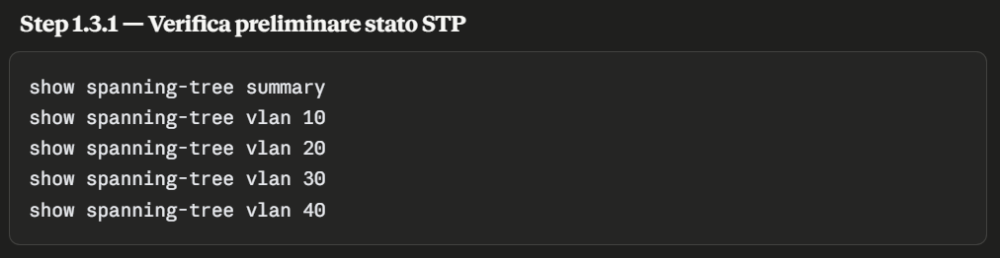
-
show spanning-tree summary— offre una panoramica generale del protocollo STP attivo e del numero di VLAN gestite. -
show spanning-tree vlan n— mostra dettagli specifici per ciascuna VLAN.
Comandi di diagnostica
I comandi appena elencati restituiscono informazioni molto importanti da comprendere, le vedremo una alla volta.
1 — show spanning-tree summary
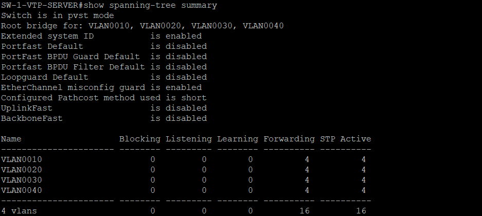
- Da questo output possiamo vedere che tipo di protocollo STP risulta essere attivo: nel nostro caso è confermato PVST+ (Per-VLAN Spanning Tree Plus), una variante Cisco che calcola un'istanza STP indipendente per ciascuna VLAN.
- Possiamo notare anche che questo specifico switch, SW-1-VTP-SERVER, è il Root Bridge per tutte le VLAN definite — coincidenza ha voluto che fosse eletto come centro logico in base al suo MAC address; in fase operativa saremo noi a definire con esattezza, in base alla priorità, chi dovrà essere il Root Bridge.
- La voce Extended System ID è una funzionalità che incorpora l'ID della VLAN all'interno del campo priority bridge, che vedremo più nel dettaglio quando dovremo eleggere il Root Bridge.
- Il Portfast Default è una funzionalità che permette a un link in access di saltare le fasi iniziali di Listening/Learning e passare immediatamente al Forwarding, riducendo i tempi di convergenza.
- La voce BPDU Guard è una funzionalità di sicurezza: se attiva su una porta in PortFast, nel momento in cui riceve un BPDU (i frame che gli switch usano tramite il protocollo STP per scambiarsi informazioni e apprendere la topologia di rete, prevenendo i loop) non autorizzato, disattiva automaticamente la porta.
- Portfast BPDU Filter è simile al Guard ma più drastico: invece di disattivare la porta, ignora semplicemente i BPDU — è sconsigliato in quanto nasconde il problema invece che segnalarlo.
- Loopguard Default è una protezione contro uno specifico loop causato da collegamenti unidirezionali.
- EtherChannel misconfig guard, funzionalità attiva di default, serve a rilevare se i membri di un EtherChannel sono configurati in modo coerente tra loro.
- UplinkFast è una funzionalità Cisco proprietaria precedente a Rapid STP, che serve ad accelerare i tempi di convergenza.
- Come la precedente, BackboneFast è una funzionalità Cisco proprietaria ormai resa obsoleta da Rapid STP: accelera i tempi di convergenza in caso di guasto di un collegamento non connesso direttamente allo switch.
- L'ultima parte mostra una tabella (Blocking/Listening/Learning/Forwarding/STP Active) con il conteggio di quante porte, per ciascuna VLAN, si trovano in ciascuno dei possibili stati STP: in questo caso siamo nel Root Bridge e tutte le 4 porte per ciascuna VLAN sono in Forwarding, coerente col fatto che il Root Bridge non blocca mai nessuna delle proprie porte.
2 — show spanning-tree vlan n
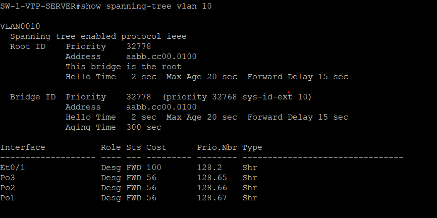
- Anche questo output mostra informazioni molto utili: ci conferma che il protocollo STP segue lo standard IEEE 802.1D classico, nel caso di PVST+.
- La sezione Root ID restituisce la Priority con valore 32778: qui possiamo capire la funzionalità Extended System ID, dato che il valore priority di default è 32768 + l'ID della VLAN (in questo caso VLAN 10, totale 32778).
- La voce Address mostra il MAC del Root Bridge.
- Possiamo notare anche la voce "This bridge is the root": conferma esplicita, presente solo nell'output dello switch che è realmente il Root per quella VLAN.
- La voce Hello Time indica l'intervallo con cui il Root Bridge invia periodicamente i messaggi BPDU; Max Age (20 sec) indica per quanto tempo uno switch considera ancora valide le informazioni BPDU ricevute, prima di scartarle come obsolete se non ne arrivano di nuove; Forward Delay indica la durata di ciascuna delle fasi intermedie Listening e Learning prima che una porta passi in Forwarding.
- La sezione Bridge ID mostra gli stessi campi della sezione Root ID, ma riferiti a questo switch specifico: coincidono con la sezione precedente perché questo switch è il Root; nell'output degli altri 3 switch questa sezione mostrerebbe MAC e priorità differenti.
- Priority scompone esplicitamente il valore 32778 nei suoi 2 componenti: la priorità base configurabile e il system ID.
- La voce Aging Time non è un timer STP, ma il tempo di invecchiamento della tabella degli indirizzi MAC per quella VLAN: dopo 300 secondi di inattività, uno switch dimentica su quale porta aveva visto un certo MAC, se non riceve più traffico da quell'indirizzo.
- La tabella delle interfacce mostra il nome della porta e del gruppo logico, il ruolo che ricopre nel protocollo STP (in questo caso tutte Designated, quindi tutte le porte stanno inoltrando traffico verso la rete), lo stato operativo, il costo STP per quella specifica porta, e Prio.Nbr (combinazione di Port Priority e numero interno della porta).
- Type "Shr" indica il tipo di collegamento rilevato, in questo caso Shared, non coerente con quanto aspettato (P2p, Point-to-Point): normalmente un collegamento full-duplex verrebbe rilevato come P2p — un aspetto da rivedere in fase di configurazione, dato che Rapid-PVST+ utilizza proprio il P2p per attivare la convergenza rapida tramite handshake diretto tra due porte.
1.3.2 - Passaggio a Rapid-PVST+ (802.1w)
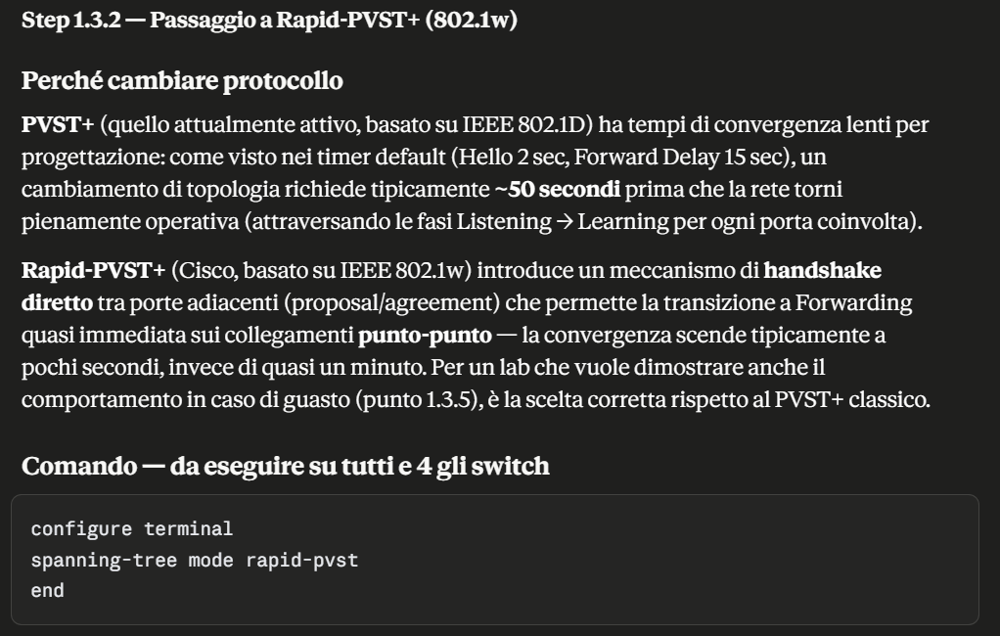
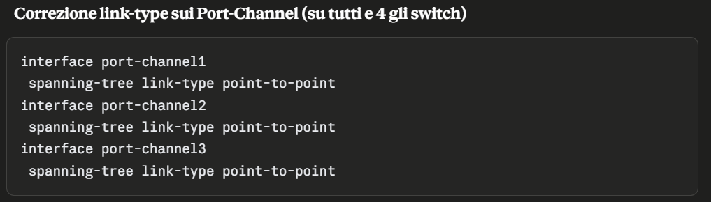
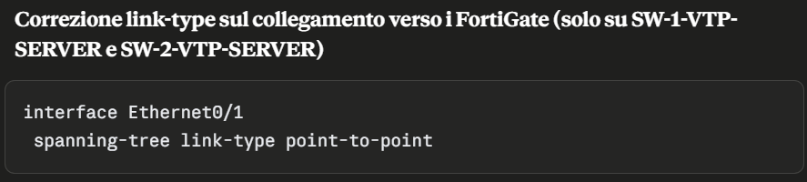
-
spanning-tree mode rapid-pvst— attiva 802.1w su tutte le VLAN esistenti. -
spanning-tree link-type point-to-point— forza manualmente il riconoscimento del collegamento, necessario dato che Rapid-PVST+ ottiene la convergenza rapida solo sui collegamenti riconosciuti come P2p.
Comandi di diagnostica
-
show spanning-tree summary— deve mostrare "Switch is in rapid-pvst mode". -
show spanning-tree vlan n— deve mostrare "Type: P2p" sulle interfacce corrette.
Durante la configurazione del link-type è stato valutato se
applicare lo stesso comando anche ai link che si connettono
agli endpoint, ma verificando su fonti Cisco non risulta
essere il comando adeguato: la designazione corretta per quei
link è "Edge", ottenibile con il comando
spanning-tree portfast.
1.3.3 - Impostazione esplicita del Root Bridge
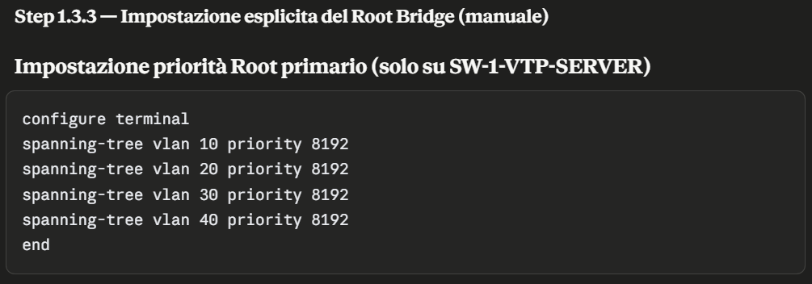
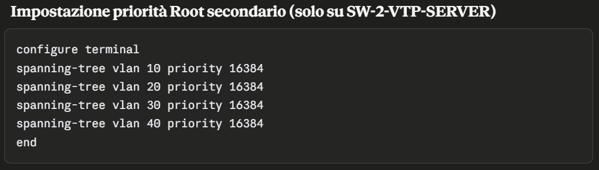
-
spanning-tree vlan n priority value— imposta manualmente la priorità dello switch per la specifica istanza della VLAN indicata.
Prima di procedere è bene comprendere la priority e cosa ci permette di fare — ricordando che in questo punto non stiamo "configurando" il protocollo STP (già attivo di default), ma controllandolo deliberatamente.
- La priority è un valore numerico arbitrario, che rappresenta il "peso" con cui ogni switch partecipa all'elezione del Root Bridge. Questo valore non riflette alcuna caratteristica fisica dello switch.
- Non agisce da solo, ma in correlazione con il MAC: la priority è la componente principale del Bridge ID, un valore a 64 bit totali, suddiviso tra Priority (16 bit) + MAC (48 bit).
- L'elezione del Root Bridge avviene per confronto numerico del Bridge ID: vince lo switch con valore complessivo più basso. Il primo valore confrontato è la Priority, e questo prevale sul secondo valore (il MAC).
- Il valore priority può assumere solo valori multipli di 4096, da 0 a 61440 (16 combinazioni possibili in totale).
- Nelle implementazioni moderne (PVST+/Rapid-PVST+) il campo priority a 16 bit viene suddiviso ulteriormente in 12 bit per il valore della priority e 4 bit per l'Extended System ID, che codifica l'ID della VLAN. Questo permette a un singolo switch di avere una priority effettiva per ciascuna VLAN — meccanismo necessario perché PVST+/Rapid-PVST+ gestiscono un'istanza STP indipendente per ogni VLAN, ciascuna con una propria elezione di Root Bridge.
- La scelta del valore della priority non riguarda solo l'elezione del Root Bridge, ma anche la flessibilità di gestione nel tempo.
Comandi di diagnostica
-
show spanning-tree summary— conferma per quali VLAN questo switch risulta Root Bridge. -
show spanning-tree vlan n— mostra il valore priority effettivo nel campo Bridge ID per ciascuna VLAN.
1.3.4 - Attivazione PortFast e BPDU Guard
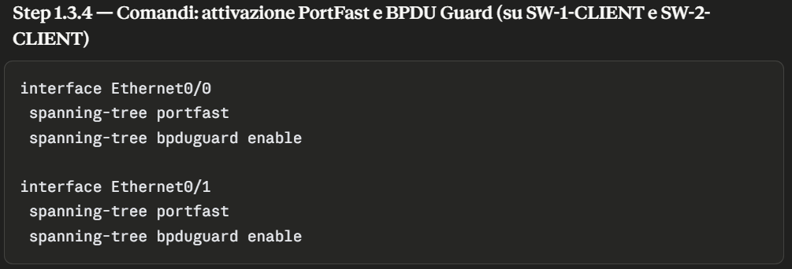
Il PortFast va abilitato solo sulle porte che si collegano agli endpoint (PC, server, stampanti). In una rete STP, ogni porta attraversa normalmente gli stati Listening e Learning prima di raggiungere lo stato Forwarding — tempi di convergenza necessari sui collegamenti diretti tra switch, dove serve verificare che non si stia creando un loop, ma superflui verso un host singolo che non può generarne uno. Quando PortFast è attivo, la porta salta questi due stati e passa direttamente a Forwarding, permettendo al dispositivo di inviare traffico non appena rileva il collegamento.
Il BPDU Guard va abilitato insieme al PortFast sulle stesse porte, come misura di protezione complementare. Una porta PortFast parte dal presupposto che non riceverà mai un BPDU, poiché solo gli switch li generano, non un host finale. Se quel presupposto venisse smentito — ad esempio perché qualcuno collega un dispositivo di rete non autorizzato al posto dell'endpoint atteso — il BPDU Guard disattiva immediatamente la porta (stato err-disabled), impedendo che possa interferire con l'elezione del Root Bridge o alterare la topologia STP.
-
spanning-tree portfast— designa la porta come Edge port, passando direttamente allo stato Forwarding. -
spanning-tree bpduguard enable— disattiva automaticamente la porta se riceve un BPDU inatteso.
Comandi di diagnostica
-
show spanning-tree interface Ethernet n detail— conferma lo stato di attivazione del PortFast. -
show running-config | include portfast|bpduguard— conferma che entrambi i comandi siano stati scritti in configurazione sulle porte.
1.3.5 - Test failover Root Bridge primario
A questo punto facciamo un test concreto, che verifica cosa succede quando il Root Bridge primario smette di funzionare — il caso peggiore e più realistico per una topologia di rete basata su STP: non cade un singolo link, ma l'intero centro della topologia logica.
Il risultato atteso è che SW-2-VTP-SERVER, con priorità 16384, venga eletto nuovo Root Bridge, e che i link attualmente in stato Alternate/Blocking passino automaticamente a Forwarding. Di seguito gli screenshot che mostrano i risultati attesi a seguito dello spegnimento dello switch primario.
La prima immagine mostra la diagnostica per lo switch SW-2-VTP-SERVER: possiamo notare "Root bridge for", che conferma l'elezione a Root Bridge primario.
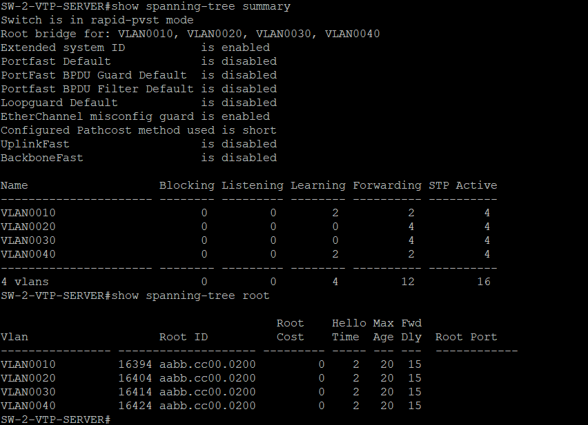
Le seguenti immagini mostrano la diagnostica degli switch client: confermano il corretto funzionamento del protocollo STP, il nuovo Root Bridge, e la variazione dello stato dei link.
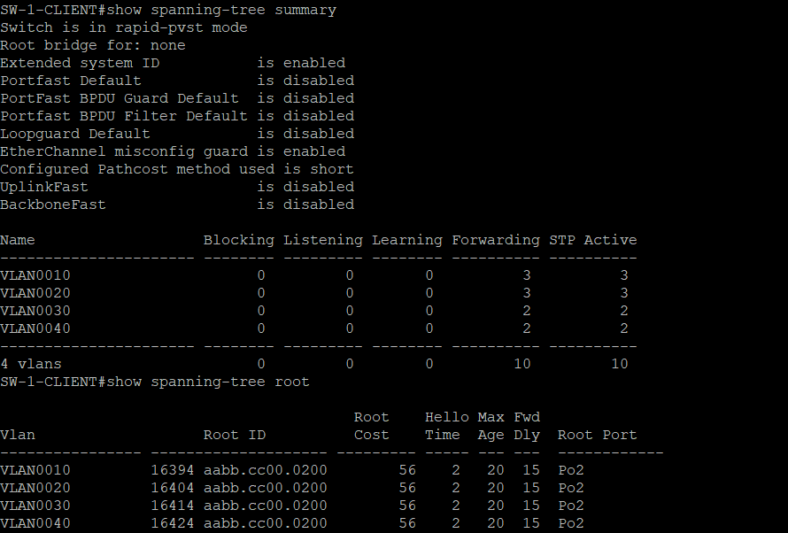
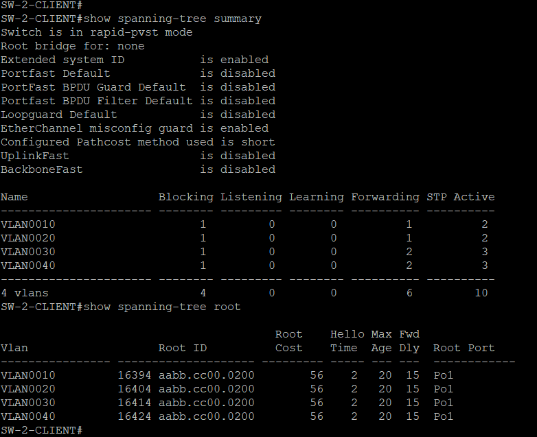
Comandi di diagnostica
-
show spanning-tree summary— mostra il nuovo Root Bridge. -
show spanning-tree root— mostra la variazione di stato dei link per raggiungere il nuovo Root Bridge.
Problemi Riscontrati - 1.3 Configurazione STP
Durante la configurazione è stato rilevato il link-type
erroneamente come "Shr" invece di "P2p": tutte le interfacce,
inclusi i Port-Channel, risultavano classificate come
collegamento condiviso invece che punto-punto — questa
immagine IOU non rileva correttamente il duplex reale delle
interfacce. È un problema per Rapid-PVST+, dato che ottiene la
convergenza rapida solo su collegamenti P2p. Risolto forzando
manualmente con il comando
spanning-tree link-type point-to-point, eseguito
su tutti i Port-Channel e sui link in trunk verso i FortiGate.
1.4 — Verifica configurazione Port Channel
1.4 - Verifica load-balancing
In questo step verifichiamo il metodo di load-balancing del Port-Channel: prima capiamo di cosa si tratta, poi perché è necessario controllarlo invece di darlo per scontato.
Immaginiamo il Port-Channel come un'autostrada a più corsie tra due switch: il traffico totale può usare tutte le corsie disponibili, ma ogni singolo flusso — una singola conversazione tra due dispositivi — percorre sempre la stessa corsia dall'inizio alla fine, senza mai saltare da una corsia all'altra a metà strada. Se lo facesse, i pacchetti arriverebbero a destinazione in ordine sparso, causando il malfunzionamento di diversi protocolli.
La domanda chiave diventa quindi: come decide lo switch, per ogni singolo flusso, quale corsia usare? È esattamente questo il compito del metodo di load-balancing: la regola con cui lo switch assegna ciascun flusso a una specifica corsia, calcolando un hash su alcuni campi del pacchetto (indirizzi MAC e/o IP, sorgente e/o destinazione).
Va verificato, e non semplicemente lasciato al caso, perché una regola mal scelta può concentrare quasi tutto il traffico su una sola corsia, lasciando le altre inutilizzate. Esempio concreto: se la regola fosse "scegli la corsia guardando solo l'indirizzo di destinazione", e la maggior parte del nostro traffico avesse sempre la stessa destinazione (il FortiGate, gateway per tutte le VLAN), lo switch sceglierebbe sempre la stessa corsia per quasi tutto il traffico — sprecando di fatto metà della capacità del Port-Channel.
Comandi di diagnostica
-
show etherchannel load-balance— mostra la regola attualmente attiva.
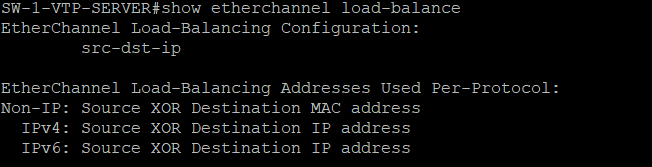
Il comando è stato eseguito su tutti e quattro gli switch
della topologia, con lo stesso risultato ovunque:
src-dst-ip. Questo significa che, per calcolare
su quale corsia far passare un flusso, lo switch guarda
insieme due valori: l'indirizzo IP di partenza e quello di
destinazione.
È un buon comportamento per la nostra rete: anche se molti flussi condividono la stessa destinazione (il FortiGate, gateway comune a tutte le VLAN), ogni PC o server di partenza ha comunque un indirizzo IP diverso dagli altri — quindi la combinazione partenza+destinazione risulta comunque diversa da un flusso all'altro, e il traffico si distribuisce bene su tutte le corsie disponibili, invece di concentrarsi su una sola.
2. Configurazione Router (R1/R2)
2.0 — Evoluzione architetturale: perché sono stati introdotti i router
Traccia / note
Durante il punto "Routing (subinterfacce VLAN)" sul FortiGate è emerso un limite non documentato in modo evidente: la licenza evaluation gratuita del FortiGate VM impone un massimo di 3 interfacce totali (fisiche e VLAN combinate). Con WAN, trunk LAN e link HA già a occupare le 3 interfacce fisiche disponibili, non restava alcun margine per creare le 4 subinterfacce VLAN necessarie al routing inter-VLAN.
- Verificato su documentazione ufficiale Fortinet (versioni 7.4.3 → 8.0.0, tutte concordi): il limite è permanente, elencato esplicitamente tra le restrizioni della licenza evaluation, e non si sblocca registrando un account FortiCloud.
- Soluzione architetturale adottata: introduzione di due router Cisco (R1, R2) tra i FortiGate e la maglia degli switch. I router ospitano le subinterfacce VLAN, il routing inter-VLAN e il servizio DHCP, con ridondanza garantita da HSRP — stesso principio di alta affidabilità già applicato tra i firewall, spostato di un livello.
- I FortiGate mantengono hardening, cluster HA e routing verso Internet — restando comunque protagonisti della sicurezza perimetrale della rete.
Per continuità di servizio completa (non solo interna, ma anche verso Internet in caso di guasto di un firewall), R1 e R2 sono collegati anche direttamente tra loro con un link punto-punto dedicato, usato sia per HSRP sia come route di backup verso Internet.
2.1 — Hardening dispositivo
Traccia / Note
A seguito dell'integrazione dei router Cisco nella topologia,
applichiamo lo stesso pincipio di hardening già seguito per
gli switch.
Stabiliamo un'identità univoca al dispositivo, accesso sicuro
e protezioni di base prima di procedere con la configurazione
funzionale. (sub-interface VLAN, routing, DHCP e HSRP).
- Identità dispositivo + Accesso privilegiato (enable secret) + AAA locale.
- Attivazione SSH v2, disabilitazione Telnet.
- Hardening linee console/aux + banner di accesso
- Protezione brute-force e limitazione sessioni SSH
- Disabilitazione servizi non essenziali (incluso no service config)
- Verifiche finali
2.1.1 - Identità dispositivo, Accesso privilegiato, AAA
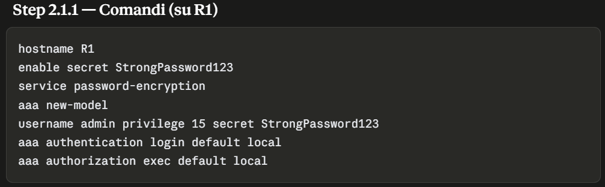
-
hostname R1 :Impostiamo esplicitamente l'identità del dispositivo, utile per distinguerlo chiaramente nell'infrastruttura -
enable secret StrongPassword123 :Impostiamo la password per accedere alla modalità con il massimo privilegio -
service password-encryprion :Applica cifratura debole a eventuali password in chiaro presenti in configuraqzione -
aaa new-model :attiva il framework AAA, sostituendo il modello legacy basato solo su password di linea -
user admin privilege 15 secret StongPassword123 :Crea un utente con il massimo dei privilegi -
aaa authentication login default local :impone che il login su line console/aux utilizzi il db utenti locale -
aaa authorization exec default local :Applica il privilegio locale al login.
Comandi di diagnostica
show running-config | include hostbname :verifica hostname.show running-config | include enable secret:verifica hash delle password di enable.show running-config | include service password-encryption :verifica presenza del service password-encryption.show running-config | include aaa :verifica presenza del framework AAA.
2.2 — Configurazione subinterfacce VLAN
Da completare.
2.3 — Routing inter-VLAN
Da completare.
2.4 — DHCP verso gli endpoint
Da completare.
2.5 — Collegamento punto-punto R1↔R2
Da completare.
2.6 — Configurazione HSRP
Da completare.
3. Configurazione firewall (FortiGate)
3.1 — Hardening Firewall Fortigate
Traccia / note
Prima di configurare HA, routing e firewall policy, stabiliamo un'identità chiara per ciascun dispositivo in rete e definiamo alcune protezioni base sull'accesso amministrativo — stesso approccio già visto al punto 1.1.
- Impostazione hostname (GUI)
- Timeout sessione amministrativa
- Soglia e durata blocco account
- Password policy amministratori
3.1.1 - Impostazione hostname (GUI)
Il primo passo è assegnare un nome identificativo univoco a ciascun FortiGate — la documentazione ufficiale Fortinet è esplicita su questo punto. Essendo i due firewall destinati a formare un cluster HA, è necessario un hostname univoco e chiaro per distinguerli facilmente l'uno dall'altro nella rete e nei log. Se restassero entrambi con il nome di default, diventerebbe difficile capire quale dei due nodi si sta effettivamente interrogando in un dato momento.
Questa configurazione viene svolta tramite l'interfaccia
grafica del FortiGate: il percorso da seguire è
System → Settings, dove è possibile variare il
nome del dispositivo. Vi fornisco per questo punto un video
che tiene traccia del processo svolto (la stessa procedura va
svolta anche nel secondo firewall).
3.1.2 - Timeout sessione amministrativa (GUI)
In questo punto impostiamo dopo quanti minuti di inattività
una sessione GUI/CLI amministrativa viene disconnessa
automaticamente: questo evita che una sessione con privilegi
elevati resti aperta se il PC viene lasciato incustodito —
stesso principio applicato con il comando
exec-timeout sugli switch.
Anche questa configurazione va eseguita tramite interfaccia
grafica: il percorso è System → Settings, e al
suo interno la sezione "Administration Settings", campo "Idle
timeout". Di default è impostato a 5 minuti, ed è consigliato
lasciarlo al default oppure abbassarlo. Il video che segue
mostra come trovare la voce "Idle timeout" (lasciata al valore
di default).
3.1.3 - Soglia e durata blocco account
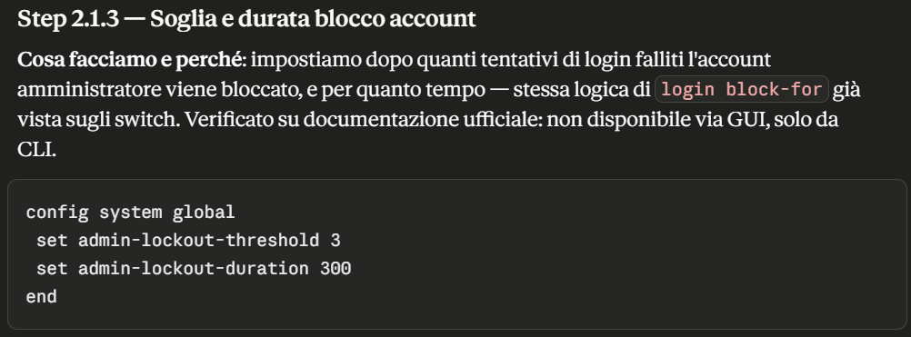
Comandi di diagnostica
-
get system global | grep admin-lockout— conferma la soglia/durata blocco impostate.
3.1.4 - Password policy amministratori
In questo punto impostiamo esplicitamente i requisiti minimi di robustezza per le password amministrative locali. Particolarità importante, verificata dalla documentazione ufficiale Fortinet: a partire dalla versione FortiOS 7.6.5 la password policy è già abilitata di default e applicata automaticamente. Vediamo comunque come verificare questi parametri, in caso si voglia apportare qualche modifica.
Possiamo verificare lo stato della password policy
amministratore tramite interfaccia grafica, selezionando
System → Settings e la sezione "Security".
Riporto anche la procedura tramite CLI per la configurazione e
la verifica.
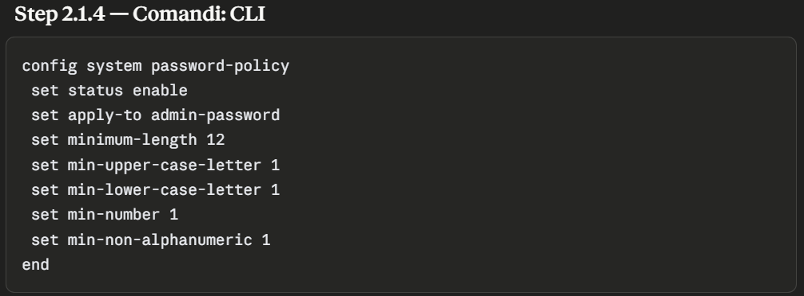
Comandi di diagnostica
-
get system password-policy— conferma i parametri di policy attualmente attivi.
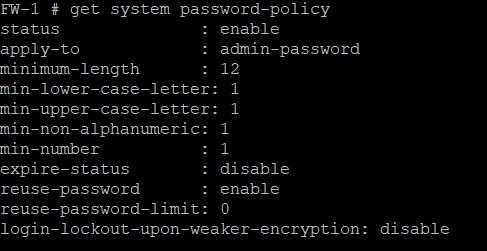
Configurazioni sicurezza successive
Le configurazioni di sicurezza attuali sono molto basilari. Non appena verranno definiti il routing inter-VLAN, create le macchine virtuali e definito il dominio, andremo ad applicare impostazioni di sicurezza più restrittive, rispettando chiaramente i limiti della licenza del firewall. Le prossime configurazioni di sicurezza saranno:
- Trusted Hosts — definizione degli host autorizzati ad accedere al firewall
- Web Filtering — definizione di regole per il filtraggio del traffico web
3.2 — Alta affidabilità (cluster HA)
Traccia / note
Configuriamo il cluster HA (High Availability) tra i due firewall, in modalità Active-Passive: se il nodo attivo si guasta, il secondo subentra automaticamente senza interruzione percepibile di servizio. È lo stesso principio applicato con STP sugli switch, in questo caso a livello di firewall/gateway.
Per questa configurazione dobbiamo considerare due aspetti fondamentali. Il primo: l'heartbeat FortiGate standard usa frame Ethernet a livello 2 con EtherType dedicati, che non funzionano bene su piattaforme virtualizzate come GNS3 — dobbiamo quindi forzare l'uso di heartbeat a livello 3. Il cluster HA richiede inoltre un collegamento diretto tra i due nodi: nel piano di indirizzamento abbiamo già definito una subnet dedicata per il link HA.
Il secondo aspetto è l'override abilitato: questo parametro rende deterministica l'elezione del nodo primario (vince sempre il nodo con priorità più alta). Se disabilitato, in caso di guasto del nodo primario il secondario subentra come attivo, ma al ritorno del primario questo non riprende automaticamente il ruolo di attivo, restando secondario.
- Assegnazione IP dedicato per il link HA
- Configurazione cluster HA Active-Passive
3.2.1 - Assegnazione IP dedicato per il link HA
In questo punto assegniamo staticamente l'indirizzo IP dedicato all'interfaccia fisica che collega i due firewall — prerequisito indispensabile per l'Unicast HA, che comunica via IP invece che con frame Ethernet L2. Questo processo va eseguito su entrambi i firewall, assegnando a ciascuno un indirizzo IP univoco. Di seguito lo screenshot della configurazione effettuata tramite CLI (queste configurazioni possono essere effettuate anche da interfaccia grafica).
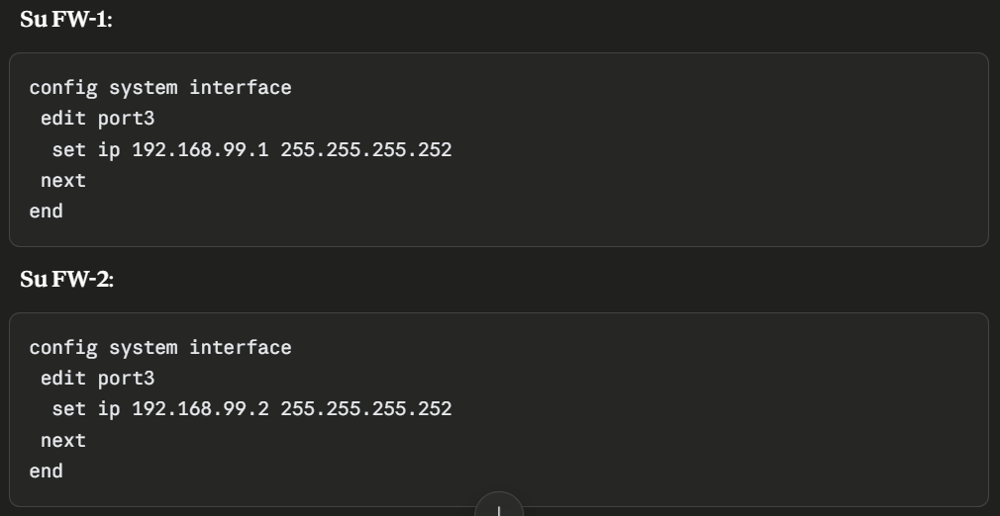
Una funzionalità interessante del FortiGate è la possibilità di assegnare un alias alla porta fisica, per essere il più esplicativi possibile.
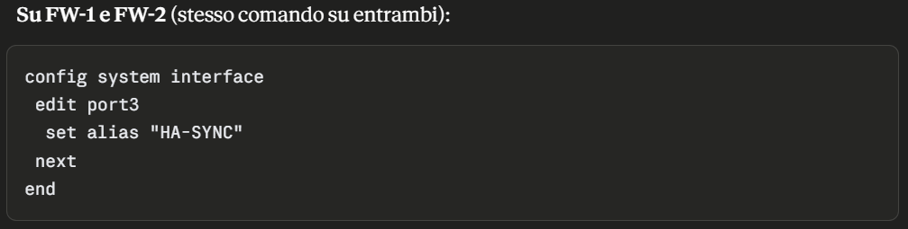
Comandi di diagnostica
-
get system interface physical— mostra lo stato e la configurazione di tutte le interfacce fisiche, incluso l'indirizzo IP appena assegnato alla porta 3.
3.2.2 - Configurazione cluster HA Active-Passive
Definiamo ora i parametri che permettono ai due FortiGate di
riconoscersi a vicenda e formare il cluster HA: modalità,
gruppo, password condivisa e priorità, interfaccia di
heartbeat, e le impostazioni di override deterministico — con
il comando override-wait-time che attenua il
doppio failover quando il nodo primario torna online. Questa
configurazione deve essere identica su entrambi i nodi, fatta
eccezione per la priority, che determina chi deve essere
eletto nodo primario. Di seguito gli screenshot delle
configurazioni effettuate tramite CLI, su entrambi i nodi.
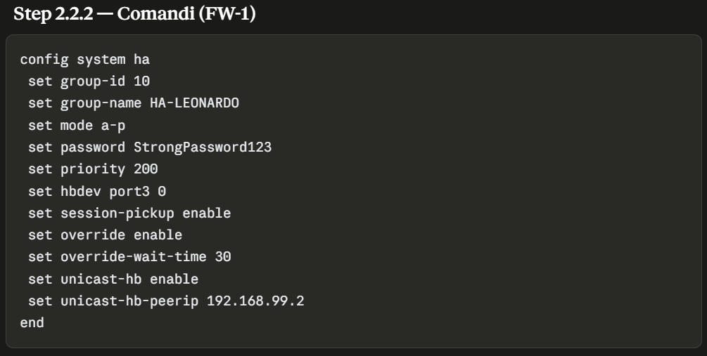
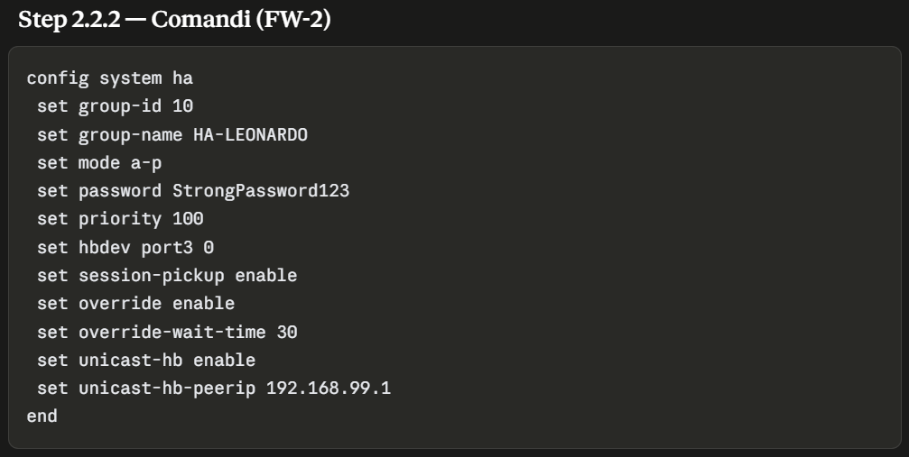
I comandi appena elencati sono stati eseguiti su entrambi i firewall:
-
group-id / group-name— identificano univocamente il cluster HA, devono coincidere su entrambi i nodi. -
mode a-p— imposta la modalità di funzionamento del cluster, in questo caso Active-Passive. -
password— è il segreto condiviso tra i due nodi, necessario per l'autenticazione reciproca. -
priority— determina quale nodo deve essere eletto primario: vince il nodo con priorità più alta. -
hbdev port3 0— specifica l'interfaccia fisica da utilizzare per l'heartbeat (in questo caso la porta 3); il valore 0 indica la priorità tra più interfacce heartbeat, se ne fossero state configurate più di una. -
session-pickup enable— abilita la ripresa delle sessioni attive in caso di failover, permettendo al nodo secondario di continuare a gestire le connessioni senza interruzioni. -
override enable / override-wait-time 30— abilita l'override deterministico, permettendo al nodo primario di riprendere il ruolo di attivo al ritorno online, con un tempo di attesa di 30 secondi per evitare un doppio failover. -
unicast-hb enable / unicast-hb-peerip IP— attiva l'heartbeat a livello 3, utilizzando l'indirizzo IP specificato per comunicare tra i due nodi, invece dei frame Ethernet L2.
Comandi di diagnostica
-
get system ha status— mostra lo stato del cluster HA, incluso il ruolo di ciascun nodo (primario o secondario) e la priorità. -
diagnose sys ha checksum show— mostra un dettaglio dei checksum per tre categorie (global, root, all). Il valore che ci interessa di più è "all": se il valore esadecimale mostrato coincide esattamente tra FW-1 e FW-2, la configurazione è davvero identica.
Problemi riscontrati
Subito dopo la formazione del cluster, il comando diagnostico
get system ha status mostrava FW-2 come
"out-of-sync" su entrambi i nodi. Diagnosticato con
diagnose sys ha checksum show: i checksum
(global, root, all) risultavano già identici su entrambi i
firewall — confermando che la configurazione era realmente
sincronizzata, e che l'etichetta "out-of-sync" era solo un
ritardo transitorio nell'aggiornamento dello stato
visualizzato, non una discrepanza reale. Risolto da solo con
il passare di qualche minuto, senza bisogno di ricalcolo
forzato.
3.3 — Routing verso Internet
Da completare. Il routing inter-VLAN, originariamente previsto qui, è stato spostato al Capitolo 2 (Router) — vedi punto 2.0 per il dettaglio del limite di licenza riscontrato.
3.4 — Firewall Policy
Da completare — regole compatibili con il limite di 3 policy della licenza.
4. Configurazione Windows Server
4.1 — Definizione Active Directory
Da completare.
4.2 — Domain Controller (DNS integrato)
Da completare.
4.3 — GPO
Da completare.
5. Deployment client
5.1 — Creazione VM master Windows 11
Da completare.
5.2 — Clonazione e Sysprep (×3)
Da completare.
5.3 — Join al dominio
Da completare.
6. Validazione e collaudo
6.1 — Connettività inter-VLAN
Da completare.
6.2 — Risoluzione DNS interna
Da completare.
6.3 — Lease DHCP per VLAN
Da completare.
6.4 — Test failover HA/HSRP
Da completare.
6.5 — Autenticazione dominio multi-client
Da completare.
7. Documentazione
7.1 — README.md
Completato: panoramica, obiettivi, prerequisiti.
7.2 — Documento HTML/CSS di tracciamento
In corso — questa stessa pagina.
7.3 — Troubleshooting log
Da completare.